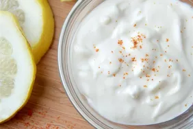

Mayo

Description
Mayonnaise, colloquially referred to as "mayo", is a thick, cold, and creamy sauce
commonly used on sandwiches, hamburgers, composed salads, and French fries.
It also forms the base for various other sauces, such as tartar sauce, fry sauce,
remoulade, salsa golf, ranch dressing, and rouille.
Ingredients
- 1 large egg yolk
- 30g water
- 15g lemon juice or white vinager or a 50/50 mixture
- 5g dijon mustard
- 2.8g salt
- 1g sugar
- 220g neutral cooking oil
Steps
- in a food processor combine all Ingredients exept the oil
- start blending and slowly add the oil to create an emulsion once all
oil is added you should be left with a thick creamy sauce
- you can now put it in a container and use for all your mayo needs